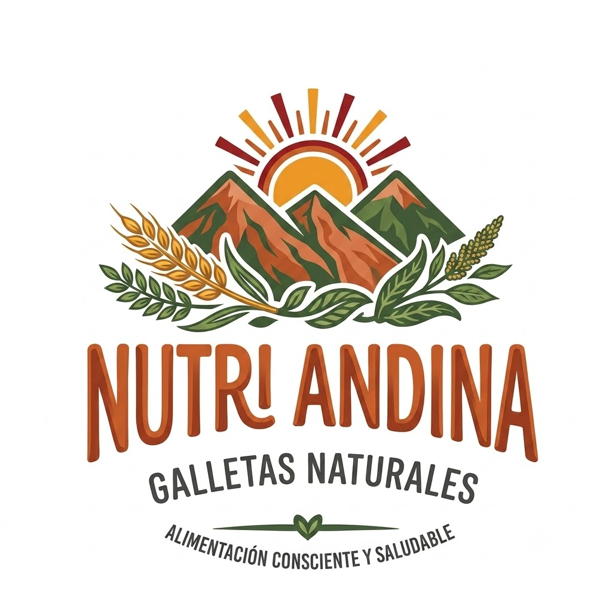
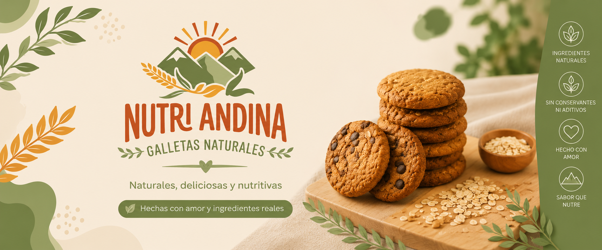
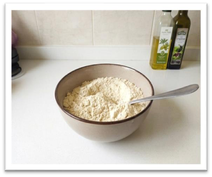
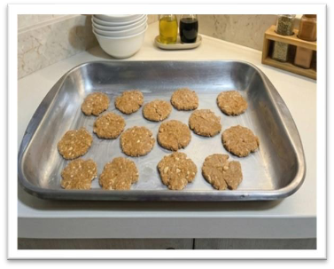
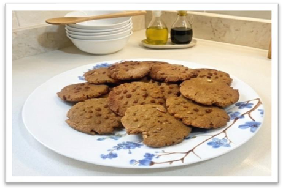
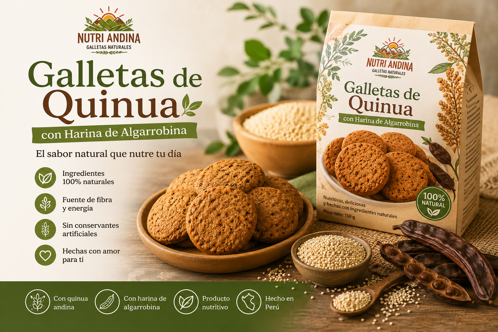

El sabor natural que acompaña tus mejores momentos.
En Nutri Andina elaboramos galletas naturales inspiradas en la riqueza de los ingredientes andinos. Nuestro compromiso es ofrecer productos deliciosos, nutritivos y elaborados con ingredientes de calidad, ideales para quienes buscan una alimentación más saludable.
Así elaboramos nuestras galletas de quinua con harina de algarrobina.

Se mezclan cuidadosamente la quinua, la harina de algarrobina y los demás ingredientes hasta obtener una masa homogénea.

La masa se divide y moldea manualmente para dar forma a cada galleta antes del horneado.

Finalmente las galletas se hornean hasta obtener una textura crujiente y un delicioso sabor natural.

Nuestras galletas están elaboradas con harina de quinua y harina de algarrobina y avena, ingredientes naturales que aportan un delicioso sabor y un gran valor nutricional. Son ideales para disfrutar como un snack saludable en cualquier momento del día.